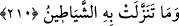
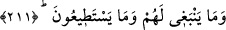
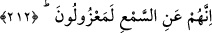

210. O’nu (Kur’an’ı) şeytanlar indirmedi.
Bu Kur’an’ı asla şeytanlar indirmedi, getirmedi. Ya da şeytanlar Kur’an ile aşağı
inmezler.
Mukâtil şöyle der: “Kureyş müşrikleri “Muhammed kâhindir. Kâhinin diline o sözleri
bırakan bir cin olduğu gibi O’nun da yanında kendisine Allah’ın kelâmı olduğunu iddiâ
ettiği Kur’an’ı getiren cinlerden birisi vardır” dediler. Onlar bu sözü şundan dolayı
söylediler: Câhiliye döneminde Hz. Peygamber (s.a.)’in peygamber olarak
gönderilmesinden önce her kâhinin, gaybdan muttali olduğunu ona haber verdiğini iddiâ
ettikleri bir cinni olurdu. Semanın kapısında kulaklarıyla hırsızlık ederler, doğru ve
yanlış duyduklarını doğruca kâhinlere iletirlerdi. Müşrikler Kur’an’ın vahyinin de bu
türden olduğunu zannettiler. Bu görüşlerinden dolayı âlemlerin Rabbi onları yalancı
olarak niteledi ve “O’nu (Kur’an’ı) şeytanlar indirmedi.” Bilakis onu Rûhu’l-emîn
indirdi” buyurdu. Bu âyet, Kur’an’ı Rûhu’l-emîn’in indirdiğini beyan etmek sûretiyle
hakkı açıkça ortaya koyduktan sonra kâfirlerin Kur’an hakkındaki iddialarını
reddetmektedir.
211. Bu onlara düşmez; zaten güçleri de yetmez.
“Bu onlara düşmez;” yâni onların Kur’ân’ı semâdan indirmeleri asla doğru ve
düzgün olmaz. “Zaten güçleri de yetmez.” Buna asla güçleri de yetmez.
212. Şüphesiz onlar, vahyi işitmekten uzak tutulmuşlardır.
“Şüphesiz onlar,” Rasûlullah (s.a.)’in peygamber olarak gönderilmesinden sonra
“vahyi işitmekten” meleklerin sözlerini dinlemekten “uzak tutulmuşlardır.” Daha önce
dinleyebiliyorken bundan men edilmişlerdir. Çünkü artık onlara kor parçaları (şihâb)
atılmaktadır.
Tefsir ehlinden birisi der ki: “Şüphesiz onlar,” meleklerin kelâmını “işitmekten uzak
tutulmuşlardır.” Çünkü zâtî sıfatlar, Hakk’ın nurlarının feyezânını kabûle istîdad,
rabbânî ilimlerin ve nûrânî ma’rifetlerin sûretlerine girme konusunda onlarla melekler
arasında ortaklık yoktur. Nasıl böyle olmasın ki onların nefisleri bizzat habis, zulmânî
ve pek şerli, türlü şerlerden ancak kendisinde asla hayır olmayan şeylere istîdadlıdırlar.